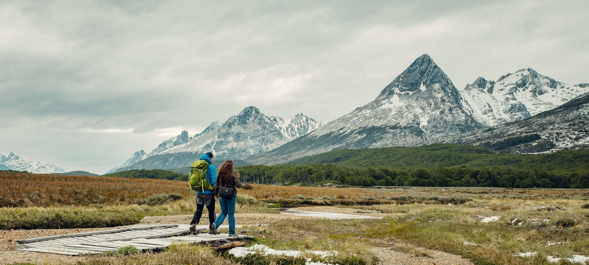

¡SENTÍ LA NATURALEZA BAJO TUS PIES EXPLORANDO LA GRAN RED DE SENDEROS QUE OFRECE ARGENTINA!
Te invitamos a volver a la Naturaleza: desde Nomade Trekking te invitamos a volver a encontrarnos con la
naturaleza, a compartir experiencias inolvidables, a seguir explorando las sierras y montañas de nuestra
país, con la responsabilidad y el profesionalismo de siempre, reafirmando nuestro compromiso de
prácticas
responsables, sustentables y de bioseguridad en ambientes naturales.
El Chaltén, área norte del Parque Nacional los Glaciares, Santa Cruz.
En este pequeño pueblo de montaña se levanta el Fitz Roy o Chaltén, uno de los cerros más
espectaculares
de Argentina.
Por todas las actividades que ofrece es conocido como la Capital Nacional del
Trekking:
vas a encontrar senderos de distinta duración, distancia y dificultad que son visitados por
caminantes
de todo el mundo.

Entre los más clásicos están:
- Sendero a la Laguna de los Tres:llega hasta el mirador natural que más se acerca a las
imponentes paredes del Fitz Roy o Chaltén, a las agujas graníticas que están a su alrededor y a
la hermosa laguna que está a sus pies. Son 25 km (ida y vuelta), es de dificultad media/alta y
lleva entre 8 y 9 horas. Si buscás una alternativa intermedia y más corta dentro de este
recorrido, podés llegar hasta la Laguna Capri (8 km ida y vuelta, dificultad media, entre 3 y 4
horas) con vistas increíbles de los cerros.
- Sendero a la Laguna Torre: podés optar por hacer una caminata corta y llegar hasta un
mirador
panorámico desde donde se ve el cerro Torre y las agujas de granito que lo acompañan (5 km ida y
vuelta, dificultad baja, 2 horas aprox), o bien continuar por el valle hasta la Laguna Torre y
enamorarte de sus cerros y glaciares (19 km ida y vuelta, dificultad baja, entre 7 y 8 horas).
Encontrá más info de los senderos, cuándo ir y cómo llegar en el imperdible de El Chalten.
Parque Nacional Perito Moreno, Santa Cruz.
Si buscás lugares solitarios y poco explorados de la Patagonia, este parque nacional es para vos. Es
uno
de los más agrestes de Argentina, con lagos turquesas, esmeraldas y grises unidos por ríos
caudalosos.
Cuenta con una gran red de senderos y refugios para que puedas explorar sus increíbles paisajes,
escenarios ideales si te gusta la fotografía y el avistaje de fauna.

Tiene tres grandes sectores para que camines:
- Sector sur: vas a encontrar senderos cortos en los alrededores del bellísimo lago
Burmeister.
También, desde la cabecera sudeste del lago Belgrano, hay senderos de más de 50 kilómetros con
cinco
refugios que permiten llegar al lago Azara.
- Sector central: permite recorrer la gran península Belgrano con más de 20 kilómetros de
senderos
y
tres refugios emplazados en bahías con vistas a las aguas turquesas del lago Belgrano.
- Sector norte: hay dos senderos de dificultad alta, uno que llega al Valle del Río Lácteo
(23 km
ida
y vuelta), y otro a la Laguna de los Témpanos (10 km ida y vuelta), en el que se suelen ver
enormes
bloques de hielo provenientes del Glaciar Lácteo. Cuenta con dos refugios.
Encontrá más info de cuándo ir y cómo llegar en el imperdible Parque Nacional Perito Moreno.
Área Natural Protegida Río Azul - Lago Escondido, Río Negro.
Si estás buscando un lugar que combine cordillera, bosques, ríos color turquesa y senderos para
caminar,
el Área Natural Protegida Río Azul o Lago Escondido (ANPRALE) te va a sorprender. Tiene una extensa
red
de circuitos de trekking de distinta duración y nivel de dificultad que podés hacer por tu cuenta si
tenés experiencia, o en compañía de guías de montaña habilitados. En la mayoría de ellos también hay
refugios para pernoctar o acampar.

Entre los circuitos más clásicos están:
- Circuito Troncal: es el sendero principal que sale del acceso La Confluencia (también
conocido
como
“Chacra Warton”). Desde acá podés llegar a uno de los lugares más increíbles y emblemáticos del
área
natural: el Cajón del río Azul y sus pozones de agua (8 km aprox, 2 horas y media). Desde este
sendero podés continuar hasta el circuito Los Lagos o conectar con el circuito Cerro Hielo Azul
o Laguna Natación.
- Circuito Cerro Hielo Azul o Laguna Natación: tiene dos accesos principales. El primero
ubicado
en la
confluencia de los ríos Encanto Blanco y Azul, y el segundo por el acceso conocido como “Doña
Rosa”.
Es el camino más corto para llegar a los pozones del río Azul en El Paraíso. La primera etapa
asciende desde el portal hasta el cerro Hielo Azul (15 km, 6 horas y media). Desde acá a Laguna
Natación son 2 km (1 hora). Conecta con el circuito troncal.
Encontrá más info de los senderos, cuándo ir y cómo llegar en el imperdible Área Natural Protegida Río Azul - Lago
Escondido.
Cerro Champaquí, Córdoba.
El cerro Champaquí es un gran desafío, ya sea si sos amante del trekking o si estás dando tus
primeros
pasos en el montañismo. Tiene 2790 msnm, es la cumbre más alta de Córdoba y una de sus maravillas
naturales.

Podés encarar el ascenso desde distintos lugares:
- Desde el Valle de Calamuchita:
Villa Alpina (a 38 km de Villa General Belgrano, es la localidad con el acceso más conocido. La
excursión dura 3 días).
Puesto Tres Árboles (un ascenso que puede hacerse en 2 días y que comienza en los 2250 msnm).
Los Linderos (a 30 km de Santa Rosa de Calamuchita, en Villa Yacanto, podés subir por un camino
vehicular hasta el cerro Linderos y después caminar 45 minutos hasta la cima).
La Cumbrecita (vas a caminar por un sendero que tiene la ventaja de que la subida es más
paulatina
que las otras opciones para hacer cumbre. Este trekking dura 3 días y termina en Villa Alpina).
-
Desde el Valle de Traslasierras:
San Javier (podés hacer este ascenso en el día solo con guía habilitado. Como el ingreso es a
través
de una propiedad privada, se requiere autorización de la Estancia La Constancia. Tené en cuenta
que
tiene un importante desnivel que se conoce como la “Cuesta de las Cabras”).
Los Molles (a 30 km de Mina Clavero, es el punto de inicio de un sendero que tiene un desnivel
extremadamente pronunciado. Podés hacerlo en 2 o 3 días).
Los Hornillos (desde esta comuna a 14 km al sur de Nono, parte un sendero que llega a la cima de
la
cumbre. Es una travesía exigente de 3 días, y en la primera jornada, se supera un desnivel de
1500
metros en la Cuesta de Totora).
Encontrá más info de cuándo ir y cómo llegar en el imperdible del cerro Champaquí.